Unofficial study solution; not an official GTU answer key. Answers have not been independently verified. English text reflows; source equations, diagrams and Gujarati retain their original appearance. Use Enlarge image to inspect them.
આ બિનસત્તાવાર અભ્યાસ ઉકેલ છે, સત્તાવાર GTU જવાબવહી નથી. PDF માંથી ગુજરાતી લખાણ સાચું નીકળતું નથી, તેથી દરેક જવાબ મૂળ ચિત્રરૂપે જાળવ્યો છે. વાંચવા માટે ચિત્ર મોટું કરો. મૂળ પ્રશ્ન અને પરીક્ષાના વિકલ્પોની સૂચનાઓ અનુસરો.
What this file is: a complete solved paper. All five questions and every OR alternative are answered — 28 answer parts. The printed English question is repeated above each answer in both language modes; only the answer changes language.
Exam instructions as printed: attempt all questions · make suitable assumptions wherever necessary · figures to the right indicate full marks · simple and non-programmable scientific calculators are permitted · the English version is authentic.
Assumptions used in the answers: water hardness is expressed as CaCO3 equivalent in ppm; gas properties are quoted at standard atmospheric conditions; plant names and figures are realistic but illustrative, not from the paper.
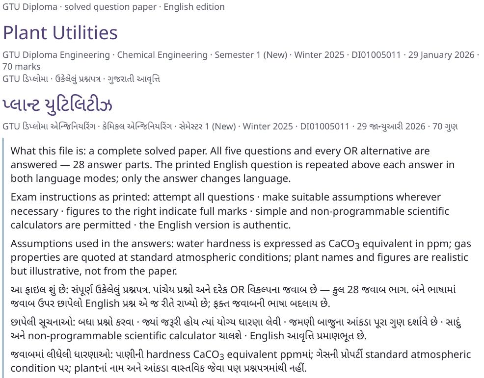
Question 1
Q1 · Ice refrigeration, UV sterilisation and water softening
Q.1 (a) · Explain Ice refrigeration. · 3 marks
Definition
Ice refrigeration is the oldest method of cooling. Ice is manufactured in an ice plant, stored, and then used to keep a space or a product below room temperature.
The cooling is not done by a machine at the point of use — it comes from the latent heat of fusion of ice: about 334 kJ is absorbed by every kilogram of ice that melts at 0 °C.
Working
• A vapour-compression unit cools CaCl2 brine to about −10 °C in the brine tank.
• Ice cans filled with clean water stand in the brine; the water freezes into blocks in 24–36 hours.
• The blocks are stored in an insulated house and carried to the cold room, wagon or fish box.
• While the ice melts it takes heat from the load, so the load stays near 0–5 °C.
Where it is used, and the limit
Ice is used for fish and meat transport, milk chilling, and small cold stores where the power supply is unreliable. Its limit is fixed by the melting point: it cannot go below 0 °C, it is bulky, and the melted water has to be drained away.
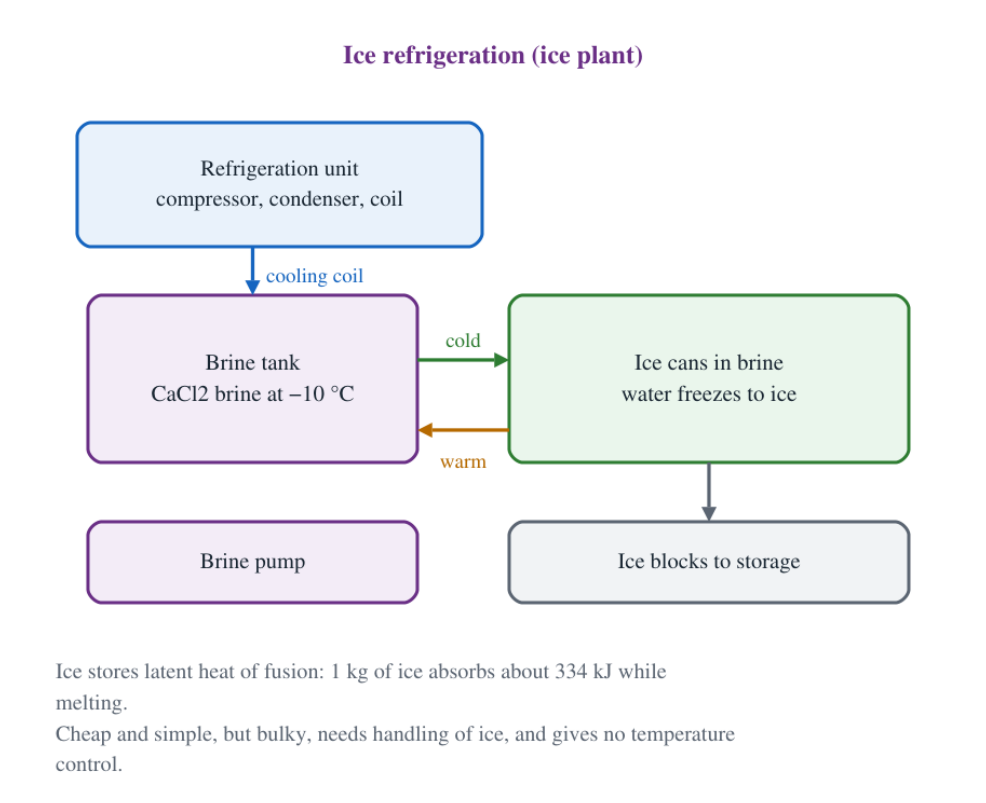
Fig. 1.1 · Ice plant — the unit chills brine, the brine freezes the ice cans.
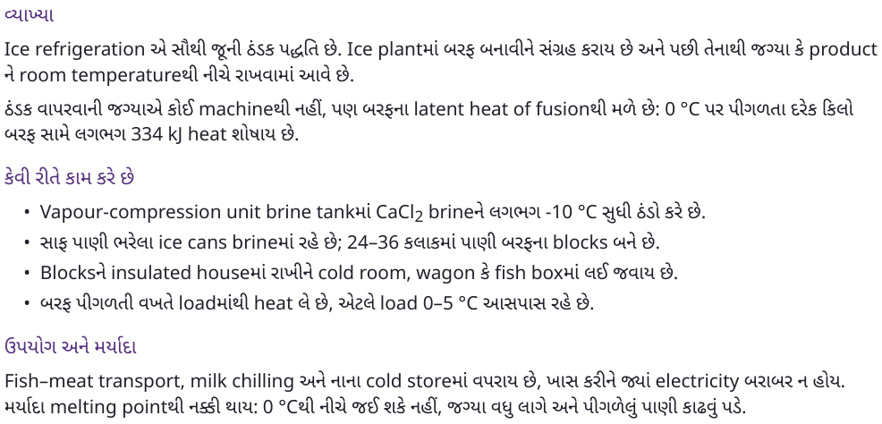
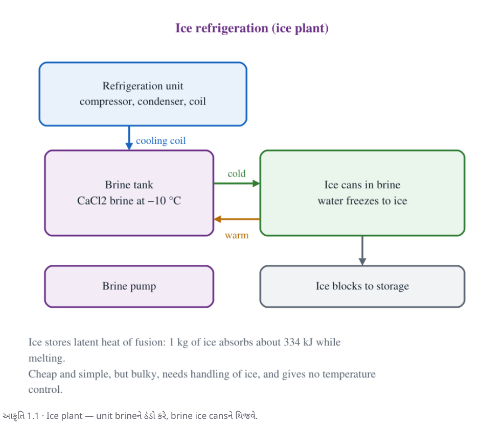
Q.1 (b) · Explain Sterilization using UV rays as green techniques. · 4 marks
Principle
UV sterilisation kills micro-organisms with ultraviolet light of about 254 nm. The photon energy is absorbed by the nucleic acid of the cell, so the DNA cannot replicate and the bacteria, virus or spore becomes inactive within seconds.
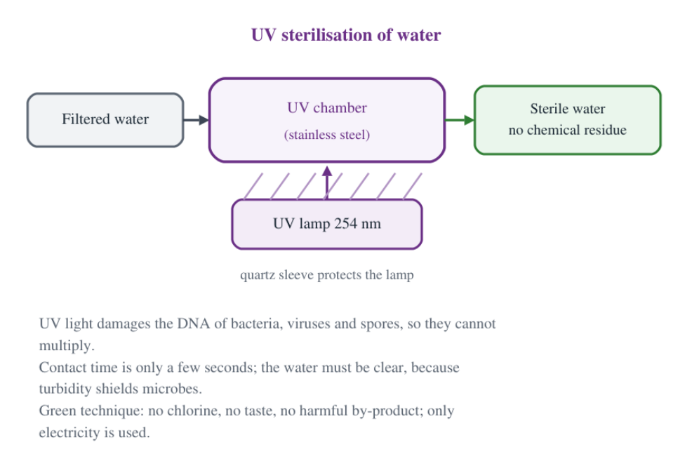
Fig. 1.2 · UV chamber fitted in a water line.
Construction and working
1. A stainless-steel chamber holds one or more low-pressure mercury lamps inside quartz sleeves.
2. Filtered water flows as a thin film around the lamp, so every layer receives the light.
3. The lamp is switched on before the flow starts; a contact time of a few seconds gives the dose.
4. Treated water leaves the chamber. The quartz sleeve is cleaned regularly and lamp hours are logged.
Why it is called a green technique
• No chlorine or other chemical is dosed, so no harmful by-product such as trihalomethane is formed.
• Taste, colour and odour of the water do not change.
• No chemical to store, transport or dispose of — only electricity is consumed.
• No corrosive chemical on site, so handling is safe.
Limitations
UV gives no residual protection: water stored after treatment can grow bacteria again. Turbidity and colour shield the microbes, so the water must be clear. Lamps lose output with age, so they are replaced every 8,000–9,000 hours.
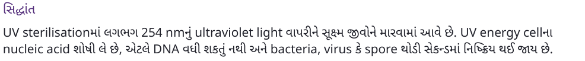
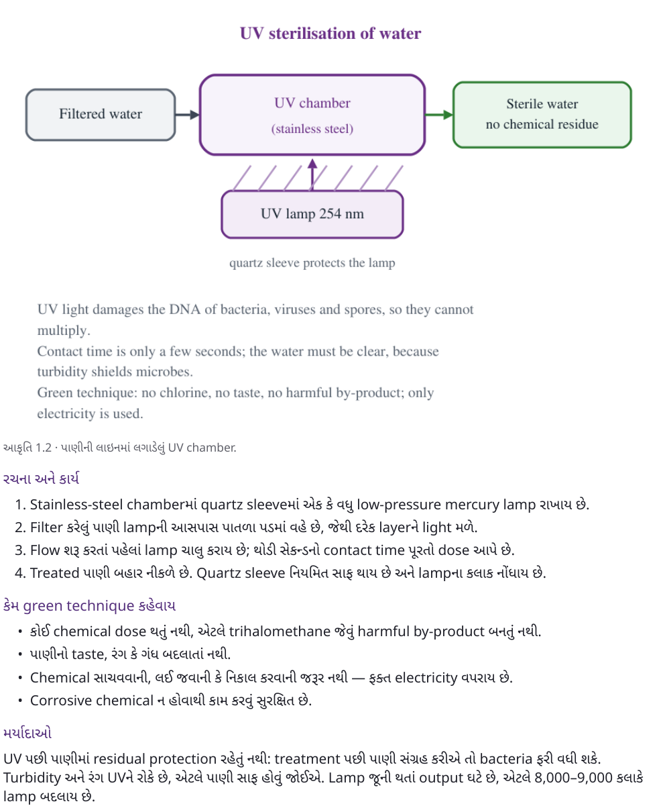
Q.1 (c) · Explain Lime soda process (Hot &Cold;) for water softening. · 7 marks
Purpose and principle
Lime–soda softening removes carbonate as well as non-carbonate hardness by precipitating Ca and Mg as insoluble compounds. Lime Ca(OH)2 handles the bicarbonate hardness and the magnesium, and soda ash Na2CO3 handles the sulphate and chloride hardness.
The precipitate settles as sludge, the clear water is filtered, and the hardness falls to about 30–50
ppm in the cold process and 15–25 ppm in the hot process.
Reactions
Ca(HCO3)2 + Ca(OH)2 → 2CaCO3↓ + 2H2O (carbonate hardness removed by lime)
Mg(HCO3)2 + 2Ca(OH)2 → Mg(OH)2↓ + 2CaCO3↓ + 2H2O
CaSO4 + Na2CO3 → CaCO3↓ + Na2SO4 (non-carbonate hardness removed by soda)
CaCl2 + Na2CO3 → CaCO3↓ + 2NaCl
MgSO4 + Ca(OH)2 → Mg(OH)2↓ + CaSO4 (the CaSO4 formed is again removed by soda)
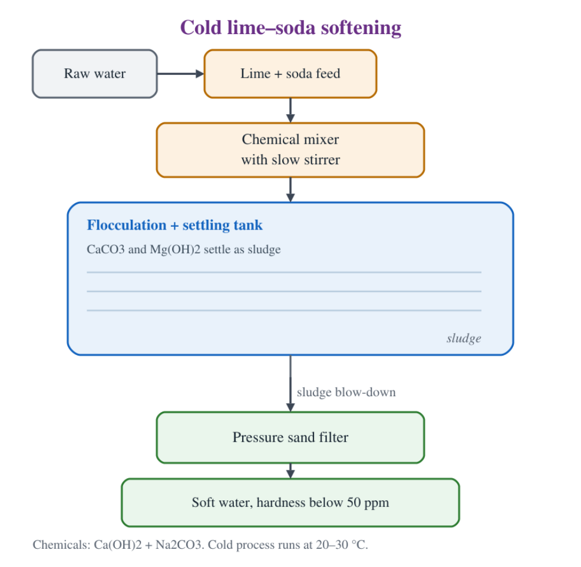
Fig. 1.3 · Cold lime–soda softener: mixer, settling tank and sand filter.
Construction — part and purpose
Part Purpose
Chemical mixer with slow stirrer
mixes raw water with lime and soda slurry so the reaction starts
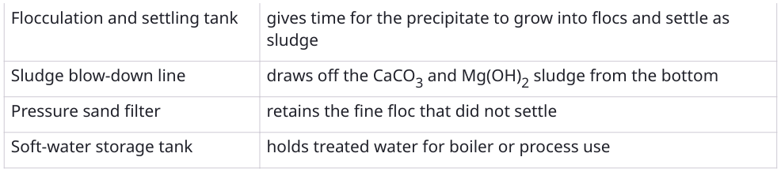
Working — step and reason
1. Step 1 — Raw water enters the chemical mixer. Lime and soda doses are fixed from the titrated hardness of that water — a slight excess of lime raises the pH and helps the floc form.
2. Step 2 — The mixture passes to the settling chamber, where the stirrer speed is reduced so that CaCO3 and Mg(OH)2 particles grow and settle.
3. Step 3 — Sludge is blown down at intervals. The clear overflow goes to the pressure sand filter.
4. Step 4 — Filtered soft water is stored. Residual hardness 30–50 ppm is normal for this process.
Cold and hot process compared
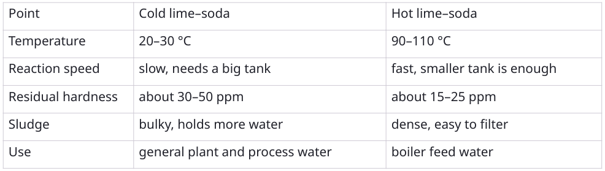
Advantages and limitations
• Cheap chemicals and simple equipment; hardness is reduced without costly resin.
• The dose can be corrected every shift from the analysis of the incoming water.
• Sludge disposal is the main cost, zero hardness is not possible, and excess lime can itself cause scale in the boiler — so the dose has to be controlled and tested.
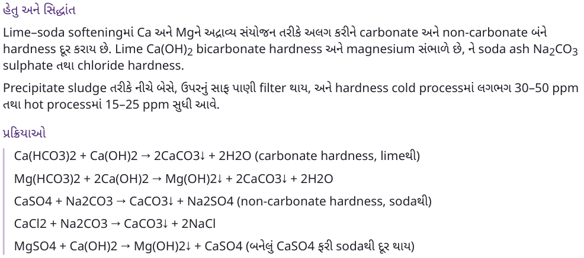
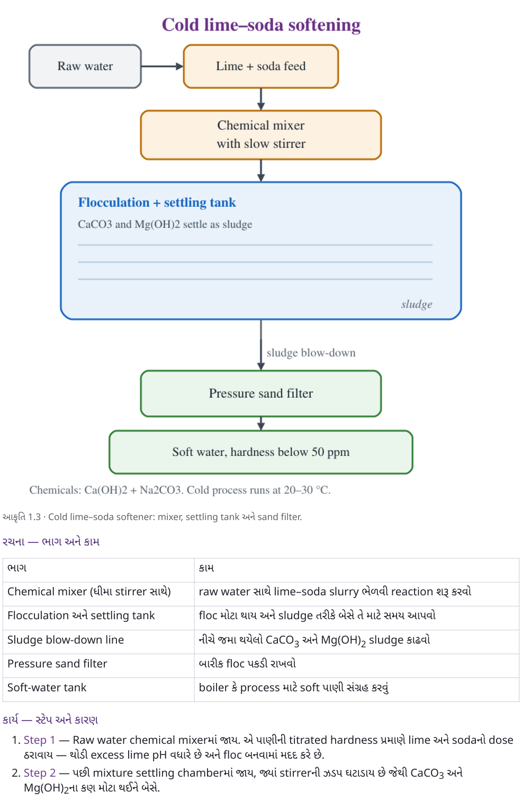
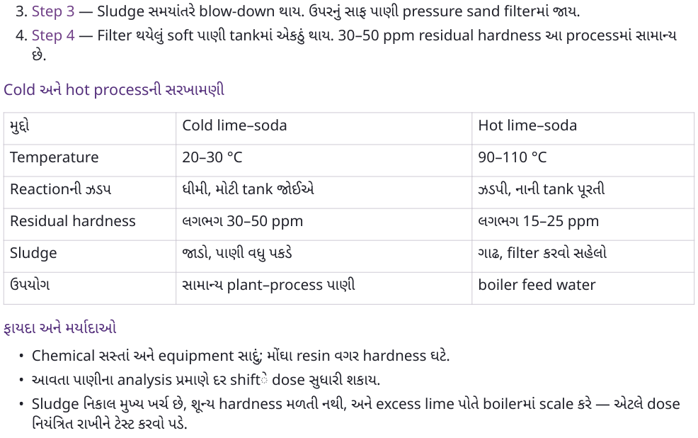
Q.1 (c) · Explain Ion exchange process for water softening. · OR · 7 marks
Principle
Ion exchange softens water without precipitating anything. The hardness ions are held on a resin and replaced by ions that cause no hardness. A cation resin in H+ form gives demineralised water when followed by an anion resin; a cation resin in Na+ form gives soft water.
Construction — part and purpose
Part Purpose
Cation-exchange column R–H resin; exchanges Ca2+ and Mg2+ for H+
Anion-exchange column R–OH resin; exchanges Cl− and SO42− for OH−
Degasser removes the CO2 released when H+ meets bicarbonate
Acid and alkali tanks regenerate the two resins
Flow, pH and conductivity meters watch the quality of the outgoing water

Fig. 1.4 · Two-bed ion-exchange (demineralisation) plant.
Working — step and reason
1. Service — Hard water flows down the cation bed. Ca2+ and Mg2+ are held by the resin and H+ is released: 2R–H + Ca2+ → R2–Ca + 2H+.
2. Anion bed — The acidic water then meets R–OH resin, which takes the anions and releases OH−; H+ and OH− combine to give water.
3. Exhaustion — When the outlet conductivity rises or hardness appears, the resin is spent.
4. Backwash — Upward water flow loosens the bed and washes out dirt.
5. Regeneration — Cation bed with dilute HCl or H2SO4, anion bed with NaOH. The waste carries the removed Ca, Mg and anions.
6. Rinse — Slow and fast rinse remove the regenerant before service starts again.
Advantages, limitations, use
• Gives almost zero hardness; the two-bed form gives demineralised water for high-pressure boilers, laboratories and electronics.
• Compact, automatic, and no sludge handling — unlike lime–soda.
• Resins and chemicals are costly; turbidity, chlorine and organics foul the resin, so pre-treatment
is necessary; the regeneration effluent has to be neutralised.
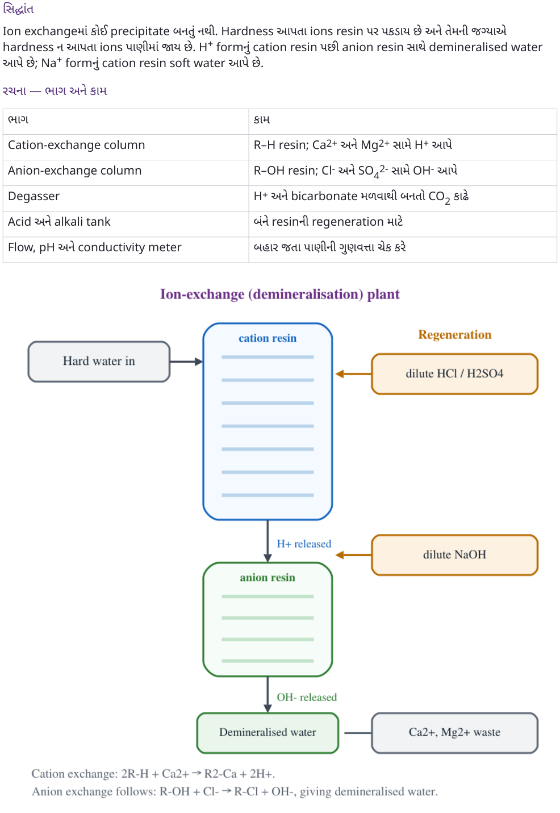
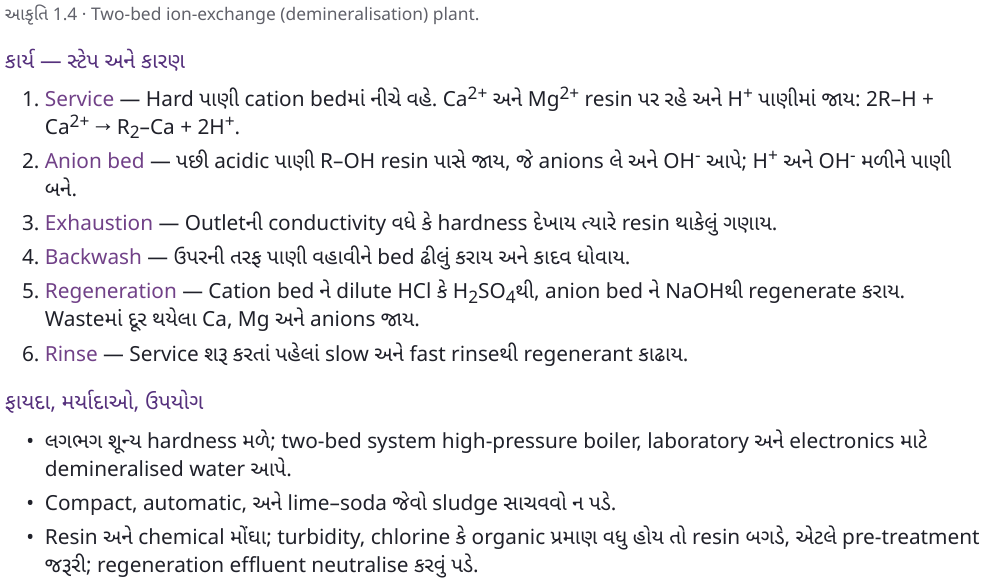
Question 2
Q2 · Hardness of water and softening methods
Q.2 (a) · Differentiate soft water & hard water. · 3 marks
Difference
![Q.2 (a): preserved source formula, table or diagram, page 12. Extracted text context (formula notation may be incomplete): Point Soft water Hard water Lather with soap gives lather easily gives lather only with much more soap Cause little or no dissolved Ca and Mg Ca and Mg salts in solution Hardness value below about 50 ppm as CaCO3 above about 100 ppm as CaCO3 With soap no scum insoluble scum forms In a boiler no scale CaCO3 and CaSO4 scale Typical source rain water, soft river water bore well, limestone ground water](winter-2025.assets/0016.webp)
Quick test: shake a sample with soap solution. Hard water needs far more soap before a lasting lather appears, and the water turns cloudy with scum.
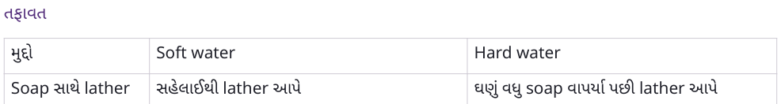
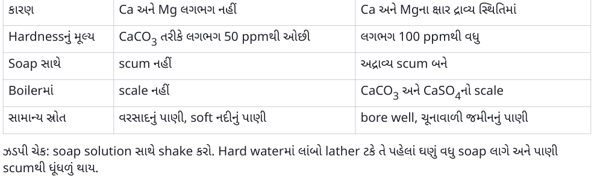
Q.2 (b) · Explain Causes of hardness in water. · 4 marks
How water becomes hard
Rain water is naturally soft. Water becomes hard while it seeps through soil and rock, because it dissolves the calcium and magnesium salts present there.
Causes, one by one
1. Limestone and chalk (CaCO3): water containing dissolved CO2 converts it into soluble Ca(HCO3)2. This is carbonate (temporary) hardness.
2. Dolomite (CaCO3·MgCO3): contributes calcium and magnesium together; dolomitic ground water is the hardest in practice.
3. Gypsum (CaSO4) and Epsom salt (MgSO4): dissolve directly and give non-carbonate (permanent) hardness, which boiling cannot remove.
4. Calcium and magnesium chlorides: highly soluble salts found in coastal and industrial ground water.
5. Human activity: sewage and fertiliser runoff, and repeated evaporation of cooling water, concentrate the salts and raise the hardness of surface water.
Types of hardness and how they are removed
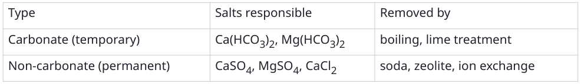
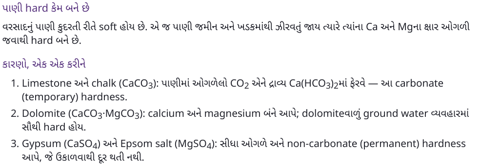
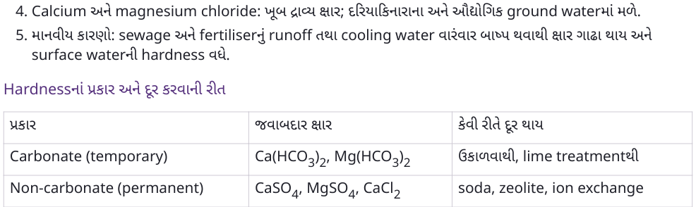
Q.2 (c) · Explain Zeolite process for water softening. · 7 marks
Principle
In the zeolite process hard water percolates through a bed of sodium zeolite (permutit, Na2O·Al2O3·nSiO2·xH2O). The Ca2+ and Mg2+ ions of the water are exchanged for the Na+ ions held by the zeolite, so the outlet water is soft.
Reactions
Ca(HCO3)2 + Na2–zeolite → Ca–zeolite + 2NaHCO3
MgSO4 + Na2–zeolite → Mg–zeolite + Na2SO4
Regeneration: Ca–zeolite + 2NaCl → Na2–zeolite + CaCl2

Fig. 2.1 · Zeolite softener with brine regeneration.
Construction — part and purpose
![Q.2 (c): preserved source formula, table or diagram, page 15. Extracted text context (formula notation may be incomplete): Part Purpose Steel vessel with zeolite bed the exchange medium; bed depth 1–1.5 m on a gravel support Inlet distributor spreads the hard water evenly over the bed Supporting gravel layer stops the zeolite from washing out with the treated water Brine tank and pump NaCl solution for regeneration Soft-water outlet with hardness test point delivers water and lets the outlet be checked Backwash and drain lines clean the bed and carry away the regeneration waste](winter-2025.assets/0023.webp)
Working — step and reason
1. Service — Hard water enters at the top and flows down. The exchange is fast, so the flow is kept at about 10–15 bed volumes per hour to give enough contact time.
2. Soft water — Water leaving the bed has hardness below about 10 ppm as CaCO3.
3. Exhaustion — After a fixed volume the bed is saturated and hardness appears in the outlet; the run is stopped.
4. Backwash — Upward flow loosens the bed and removes suspended dirt, so the brine can reach every grain.
5. Regeneration — 10 % NaCl brine is passed slowly; Na+ replaces the Ca2+ and Mg2+ on the bed, and the waste carries CaCl2 and MgCl2.
6. Rinse — The bed is rinsed with soft water until chloride disappears from the outlet, then service restarts.
Advantages, limitations, use
• Very low hardness, compact unit, no sludge, low running cost, and the cycle can be made automatic.
• Turbid water blocks the bed; iron and manganese poison the zeolite; the waste brine must be disposed of; and it cannot remove anions, so the water is soft but not demineralised.
Use: boiler feed, laundry, textile dyeing and cooling-water make-up, wherever hardness below about 10 ppm is required.
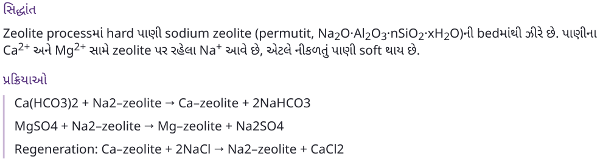
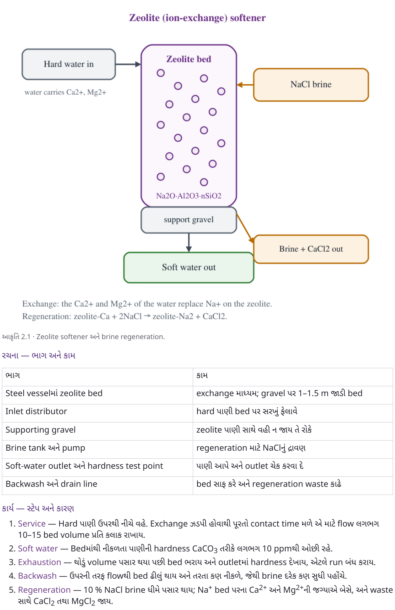
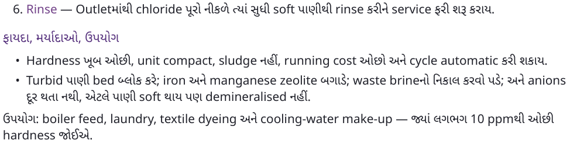
Q.2 (a) · List characteristics of drinking water. · OR · 3 marks
Characteristics of drinking water

It must also be free of visible colour, suspended matter, and toxic metals such as lead and arsenic. These values follow the usual IS 10500 drinking-water limits.
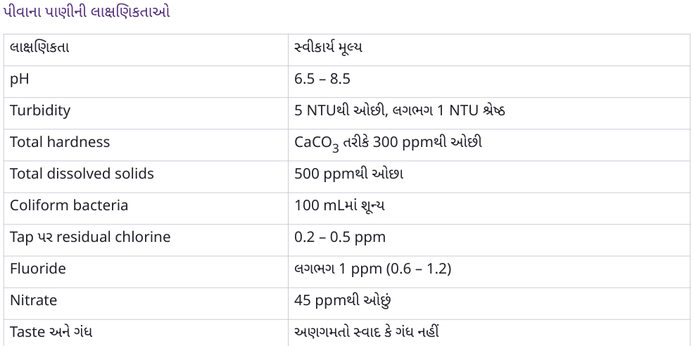
Q.2 (b) · List use of various utilities in chemical plant. · OR · 4 marks
Utilities and their use
![Q.2 (b) OR: preserved source formula, table or diagram, page 19. Extracted text context (formula notation may be incomplete): Utility Main use in a chemical plant Water — process, cooling, boiler feed reaction medium, washing and extraction, cooling-tower make-up, steam generation Steam — LP / MP / HP jacket and coil heating of reactors, reboilers of distillation columns, evaporators, dryers, line tracing Compressed air — instrument and plant pneumatic control valves and instruments, air motors, cleaning, oxidation air Blower air combustion air for boilers and furnaces, ventilation, aeration of effluent treatment Nitrogen — inert gas tank blanketing, purging before start-up and maintenance, inert atmosphere for flammable solvents Refrigeration — chilled water or brine condensing low-boiling vapours, chilling, cold storage Electricity and fuel pump and compressor drives, furnaces, lighting Effluent treatment safe disposal of waste water and compliance with the consent limits](winter-2025.assets/0030.webp)
Why they are called utilities
They are services produced in a central utility block and distributed to every process unit. No single product can be made without them, yet they are not the product itself — that is exactly what the word utility means in a plant.
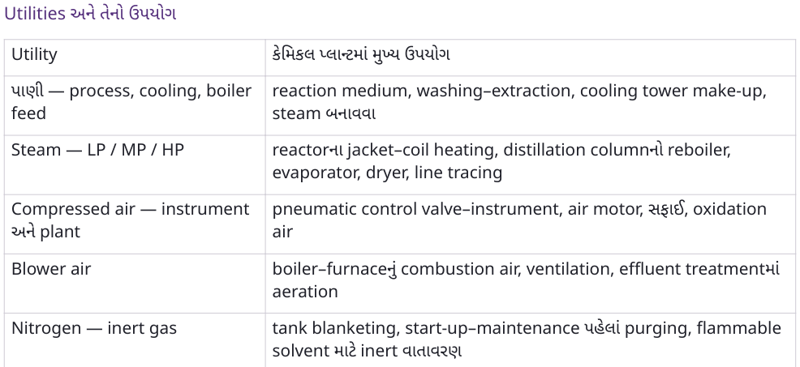
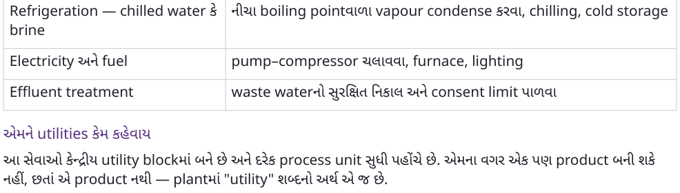
Q.2 (c) · Explain Phosphate process for water softening. · OR · 7 marks
Principle
In the phosphate process sodium phosphate (Na3PO4) or sodium hexametaphosphate (calgon) is dosed into the water. Calcium and magnesium phosphates are almost insoluble, so the hardness ions are precipitated and removed.
The residual hardness is only about 5 ppm — the lowest of all the chemical softening processes — which is why it is used where a boiler must stay absolutely scale-free.
Reactions
3Ca(HCO3)2 + 2Na3PO4 → Ca3(PO4)2↓ + 6NaHCO3
3CaSO4 + 2Na3PO4 → Ca3(PO4)2↓ + 3Na2SO4
3MgSO4 + 2Na3PO4 → Mg3(PO4)2↓ + 3Na2SO4
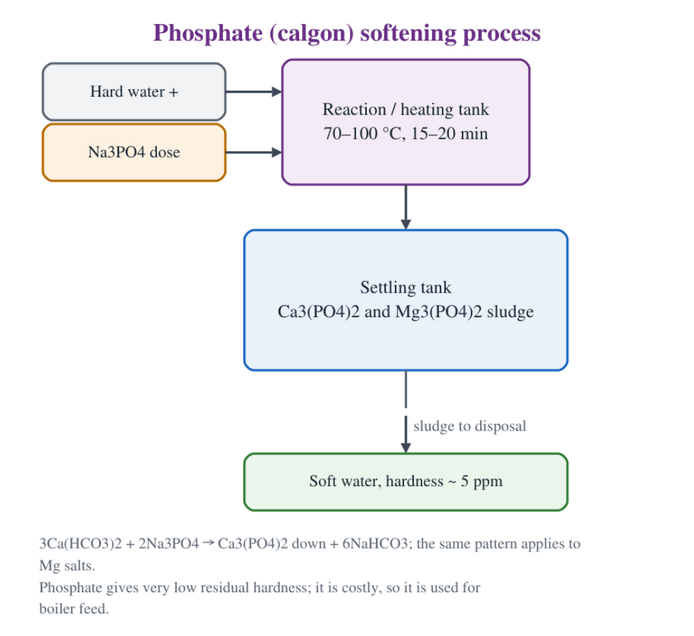
Fig. 2.2 · Phosphate softening: dosing, reaction tank, settling and filtration.
Construction — part and purpose

Working — step and reason
1. Step 1 — The hardness of the incoming water is measured and the phosphate dose is set from it; a small excess keeps the residual low.
2. Step 2 — Water and phosphate are mixed in the reaction tank. Heating to 70–100 °C makes the precipitate dense and quick to settle.
3. Step 3 — The mixture is held in the clarifier so that the phosphate sludge settles at the bottom.
4. Step 4 — Sludge is drawn off; the clear overflow is filtered and used as boiler feed water.
Advantages and limitations
• Lowest residual hardness, so practically no scale forms on the boiler tubes.
• In a boiler the phosphate also acts as an internal treatment: any hardness that enters later is converted into loose sludge that can be blown down instead of forming hard scale.
• The dose can be linked to the feed-pump stroke, so operation is simple and automatic.
• The chemical is costly, sludge disposal is a problem, and a large excess of phosphate causes foaming and caustic embrittlement of the boiler metal.
Use: mainly internal treatment of boiler feed water and small high-purity water systems.
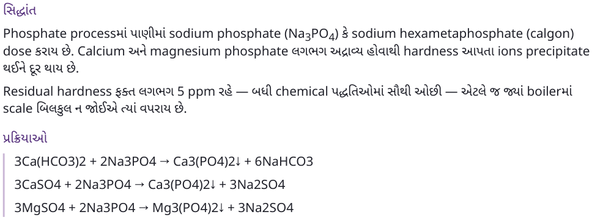
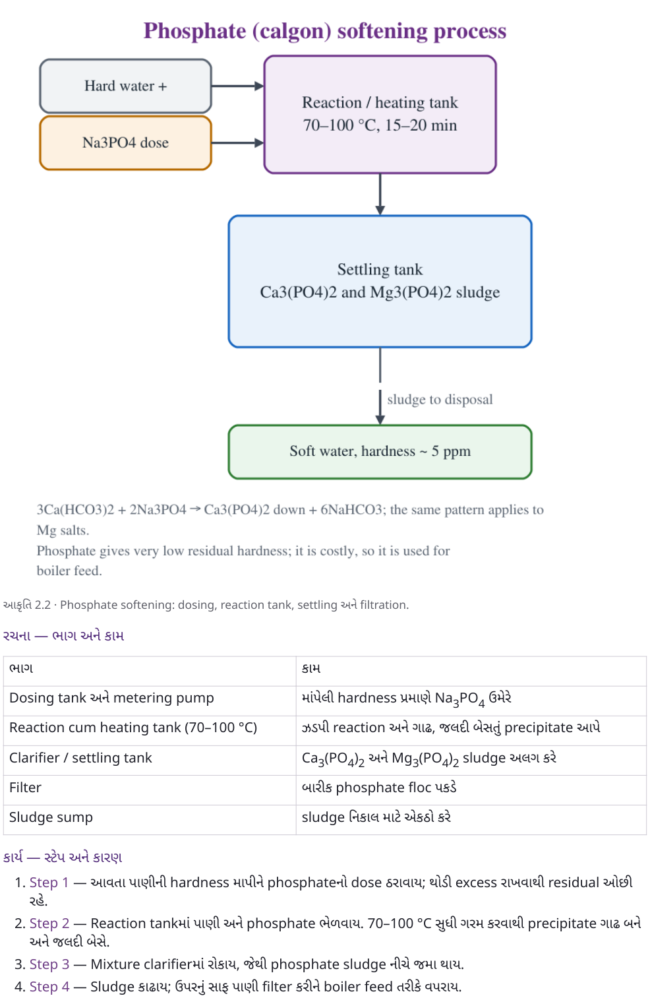
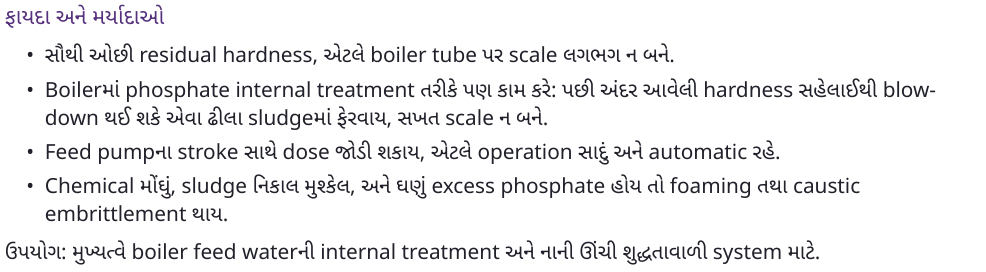
Question 3
Q3 · Refrigerants, steam and boilers
Q.3 (a) · Explain various properties desirable in an ideal refrigerant. · 3 marks
Desirable properties
• Thermodynamic: high latent heat of vaporisation, boiling point slightly below the required temperature, low specific volume of vapour, high critical temperature.
• Safety: non-toxic, non-flammable, non-explosive, no irritating odour, no harm if it leaks into the product area.
• Chemical: stable in the cycle, no reaction with lubricating oil or metals, no corrosion, no moisture absorption.
• Physical: leak easily detected, low viscosity, high thermal conductivity, low freezing point.
• Economic and environmental: cheap and easily available, low power consumption per tonne of refrigeration, small compressor for the duty, zero ozone-depletion and low global-warming potential.
No single fluid has all of these properties. The refrigerant is chosen by weighing the properties that matter most for the job — for example R-134a in a domestic refrigerator, ammonia in an industrial cold store, R-600a where the charge must be very small.
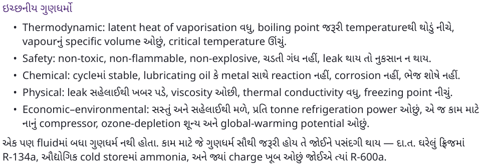
Q.3 (b) · List use of Steam and Air. · 4 marks
Uses of steam in a chemical plant
• Heating: jackets and coils of reactors, reboilers of distillation columns, evaporators, dryers and preheaters.
• Direct injection: live steam for heating, stripping and steam distillation.
• Power: steam turbines driving pumps, compressors and generators.
• Tracing and atomising: steam tracing of pipelines to stop freezing or solidification, and steam atomising of fuel oil.
• Process and utility: steam cracking, humidification, cleaning and sterilising.
Uses of air
• Combustion air: for boilers, furnaces and flare stacks, supplied by a forced-draught blower.
• Compressed air: pneumatic instruments and control valves, air motors, cleaning and sparging.
• Oxidation air: oxidation reactions, aerobic effluent treatment, aeration tanks.
• Cooling and drying: air-cooled heat exchangers, drying of equipment and powder conveying.
• Safety: air is used to purge lines where a flammable gas must not remain.
Which one where
Steam is chosen where heat must be delivered with a high heat-transfer coefficient and easy control; air is chosen where the duty is combustion, oxidation, conveying or instrument actuation.
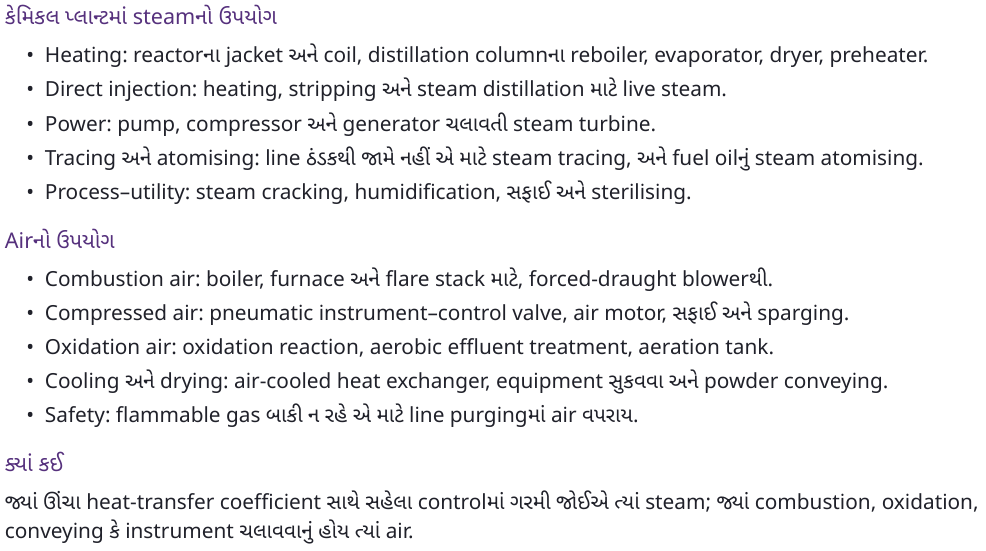
Q.3 (c) · Explain construction and working of Locomotive boiler. · 7 marks
What it is
The locomotive boiler is a horizontal, multi-tubular fire-tube boiler of about 9,000 kg/h capacity at 14–16 bar. It was designed for steam locomotives, so it is compact, light and mounted on the frame of the vehicle.

Fig. 3.1 · Locomotive boiler: fire box, fire tubes, smoke box, dome and chimney.
Construction — part and purpose
Part Purpose
Shell steel body holding the water and steam; bolted to the locomotive frame
Fire box and grate coal burns here; the hot gases begin their path from this point
Combustion chamber completes the burning of the gases before they enter the tubes
Fire tubes (about 150–180) carry hot gas through the water and provide a large heating surface
Smoke box and chimney collect the cooled gas and throw it out; the chimney also creates the draught
Steam space and dome collect dry steam; the dome keeps the outlet above the water line
Regulator valve controls the steam going to the cylinders
Safety valve, pressure gauge, water gauge
protect the boiler and show its condition
Feed-water inlet and blow-down cock
maintain the level and remove sludge
Working — step and reason
1. Step 1 — Coal is fired on the grate and air enters through the ash pan, so combustion starts in the fire box.
2. Step 2 — The hot gases pass through the combustion chamber and then through the fire tubes. The tubes are surrounded by water, so heat passes into the water.
3. Step 3 — The gases reach the smoke box and leave through the chimney. The exhaust steam blower in the chimney increases the draught, so more air is pulled through the fire.
4. Step 4 — The water absorbs heat, circulates by natural convection and turns into steam, which collects in the steam space and the dome.
5. Step 5 — Steam leaves through the regulator to the cylinders, and the exhaust steam is used again to create the draught.
Advantages and limitations
• Very high evaporation rate for its size, compact, light, and it moves with the vehicle.
• The fire box is inside the shell and the boiler has to follow the load, so skilled firing is needed.
• It is not suitable as a stationary plant, and the tubes are difficult to clean.
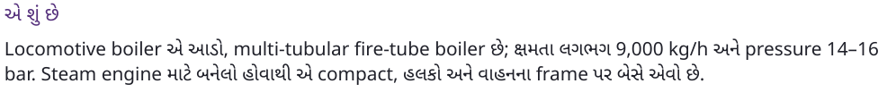
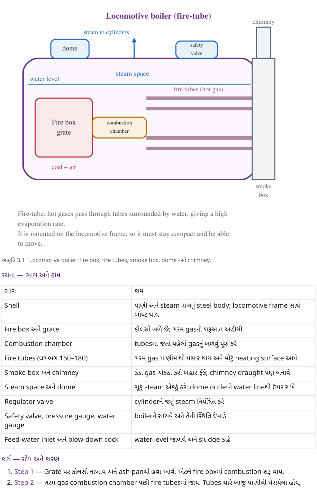
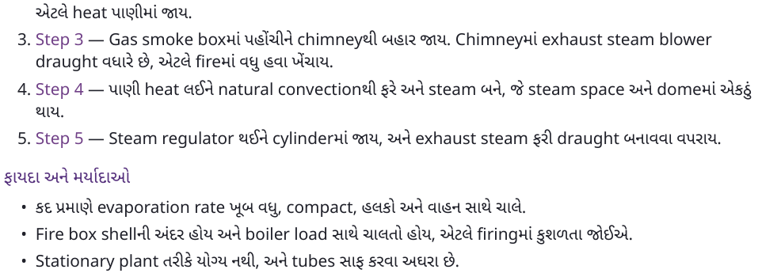
Q.3 (a) · Explain evaporative refrigeration system. · OR · 3 marks
Principle
In evaporative refrigeration the cooling comes from the evaporation of water itself. When water evaporates it takes its latent heat — about 2,450 kJ per kg at 25 °C — from the air around it, so that air becomes cooler and more humid. No compressor and no refrigerant are needed, only a fan and a water supply.
Working
1. A fan pulls air through a wet pad, or through a spray of water.
2. Water evaporates into the air and absorbs latent heat from the air.
3. The dry-bulb temperature of the air falls and its humidity rises; the wet-bulb temperature stays nearly the same.
4. The cooled air is supplied to the room. The same principle cools water in a cooling tower.
Use and limits
Used in desert coolers, cooling towers and evaporative condensers. It works well in hot, dry air and poorly in humid weather, because humid air can absorb little more water. It cannot cool below the wet-bulb temperature and it adds moisture to the space.
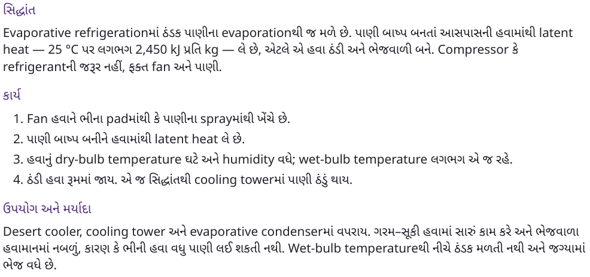
Q.3 (b) · List properties of steam with one example. · OR · 4 marks
Properties of steam
![Q.3 (b) OR: preserved source formula, table or diagram, page 30. Extracted text context (formula notation may be incomplete): Property Meaning Value at 1 bar (example) Sensible heat / enthalpy of liquid, hf heat to bring 1 kg water from 0 °C to the boiling point 417 kJ/kg Latent heat, hfg heat to change 1 kg saturated water into dry saturated steam 2,257 kJ/kg Enthalpy of dry saturated steam, hg hf + hfg 2,674 kJ/kg Dryness fraction, x mass of dry steam ÷ total mass of the mixture x = 0.95 means 5 % water by mass Specific volume, vg volume of 1 kg of steam 1.694 m³/kg Saturation temperature boiling point at that pressure 100 °C at 1.013 bar, 180 °C at 10 bar Superheat heat added above saturation temperature steam at 300 °C at 10 bar has about 120 °C superheat](winter-2025.assets/0045.webp)
One example worked out
At 1 bar, 1 kg of water at 0 °C is heated: 417 kJ of sensible heat brings it to 100 °C, then 2,257 kJ of latent heat turns it into steam. The enthalpy of dry saturated steam is therefore 417 + 2,257 = 2,674 kJ/kg.
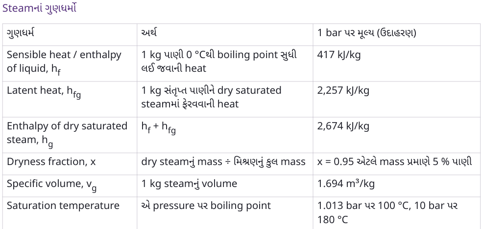
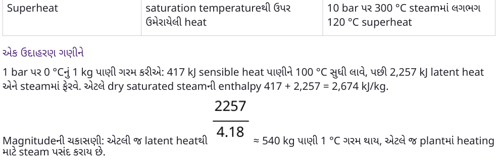
Q.3 (c) · Explain construction and working of Lancashire boiler. · OR · 7 marks
What it is
The Lancashire boiler is a horizontal, stationary fire-tube boiler with two large internal flues. It is built for capacities up to about 9,000 kg/h at 10–15 bar and is the standard boiler for steady process steam in small and medium plants.
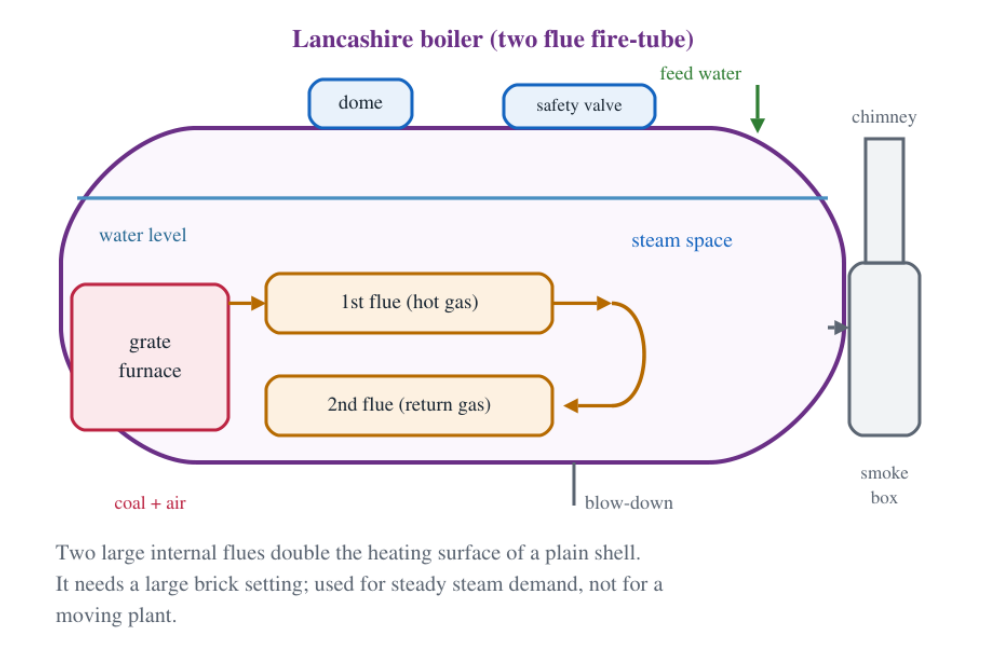
Fig. 3.2 · Lancashire boiler: fire box, two flues, brick baffle, smoke box and dome.
Construction — part and purpose
Part Purpose
Cylindrical shell holds water and steam; diameter about 2–3 m, length 7–9 m
Fire box and grate at the front burns the coal; the gases enter the first flue
![Q.3 (c) OR: preserved source formula, table or diagram, page 32. Extracted text context (formula notation may be incomplete): Two internal flues carry hot gas through the water, giving a large heating surface, and also stiffen the shell Brick baffle setting turns the gas for a third pass under the shell, so more heat is transferred Smoke box and chimney collect the cooled gas and produce the draught Steam space, dome, safety valve, pressure gauge dry steam collection, protection and monitoring Fusible plug, water gauge, feed inlet guard against low water and show the level Blow-down cock removes sludge and scale-forming salts](winter-2025.assets/0050.webp)
Working — step and reason
1. Step 1 — Coal is fired on the grate and air comes through the ash pit, so combustion starts in the fire box.
2. Step 2 — Hot gas travels along the first flue to the back, then turns and comes forward through the second flue. The two passes give a long gas path and better heat transfer.
3. Step 3 — After the second flue the gas passes under the shell through the brick baffle setting and leaves through the smoke box and chimney.
4. Step 4 — Water around the flues absorbs heat, circulates by natural convection, and steam forms in the steam space above the water level.
5. Step 5 — Steam is drawn from the dome; the safety valve releases excess pressure and the water gauge shows the level.
Advantages and limitations
• Simple and robust, large steam space, easy to repair, moderate cost and good efficiency for a fire-tube boiler.
• Large floor area and heavy brick setting, slow start-up, unsuitable above about 15 bar, and the flues are difficult to clean.
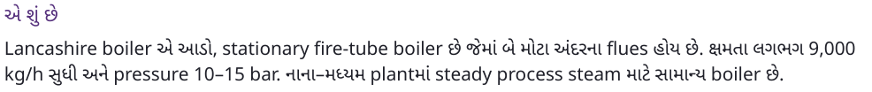
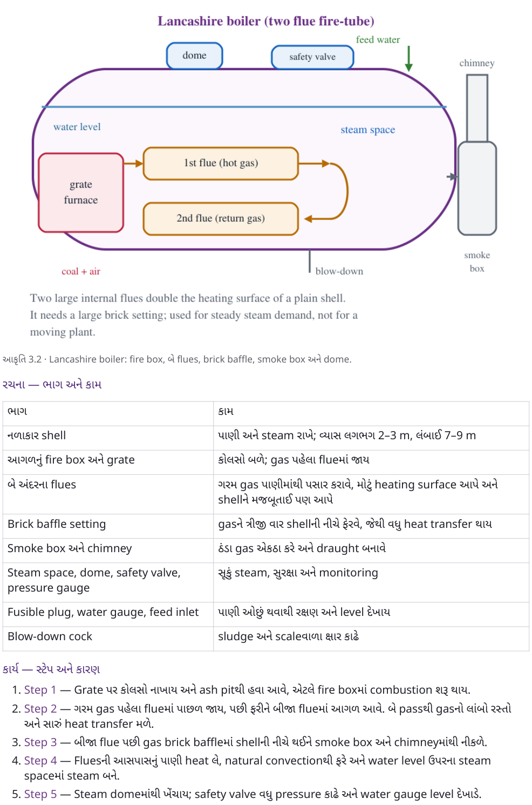
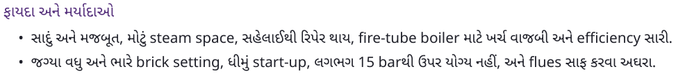
Question 4
Q4 · Air as a utility, boiler selection and air compressors
Q.4 (a) · Explain blower air and compressed air as utility of air. · 3 marks
Blower air
Blower air is air moved in large volume at low pressure rise, typically 0.05 to 1 bar. It is produced by a centrifugal or roots blower and is used where the quantity matters more than the pressure: combustion air for boilers and furnaces, ventilation, pneumatic conveying of light material, and aeration in effluent treatment.
Compressed air
Compressed air is air stored at high pressure, usually 6 to 10 bar, in a receiver. It is made by a reciprocating, rotary or centrifugal compressor and is used as a power and control medium: pneumatic instruments and control valves, air motors and tools, cleaning and sparging, and oxidation air.
Difference in one look
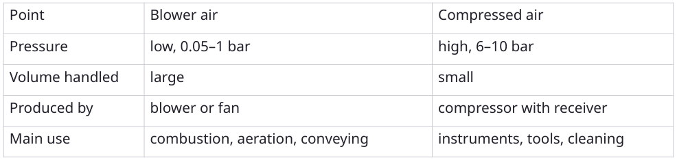
Instrument air must be dry and oil-free, so a compressed-air line has an aftercooler, a dryer and a filter before the instrument header.
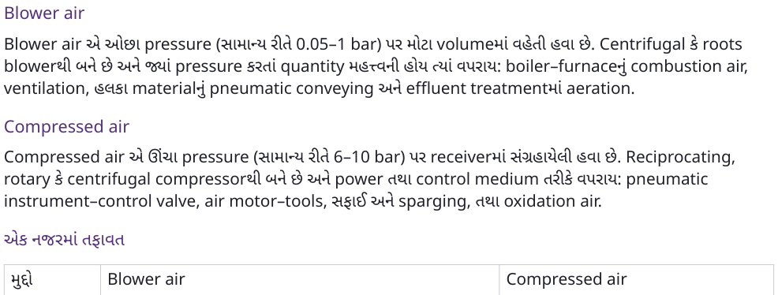
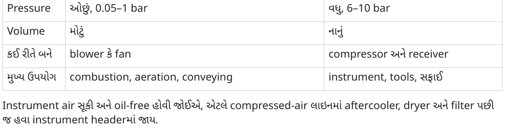
Q.4 (b) · List factors affecting selection of Boiler. · 4 marks
Factors affecting boiler selection
![Q.4 (b): preserved source formula, table or diagram, page 35. Extracted text context (formula notation may be incomplete): Factor What it decides Steam demand (kg/h) and how much it varies boiler size; a swinging demand needs more steam space or a bank of boilers Working pressure and temperature fire-tube up to about 15 bar, water-tube above; a superheater is needed for high temperature Fuel available and its cost coal, oil, gas or agro-waste decides the furnace and firing system Floor area, headroom and weight a Lancashire boiler needs a large area, a packaged boiler very little Efficiency and running cost economiser, air preheater and number of gas passes Water quality hard water demands a water-tube boiler with good treatment or internal phosphate dosing Nature of the load steady process load, or quick start-up and quick shutdown Initial cost, maintenance and life packaged boilers are quick to install, shell boilers are cheaper to repair Safety and statutory requirements IBR approval, safety valves, drum size, operator skill](winter-2025.assets/0057.webp)
In practice the selection is a compromise: the boiler must meet the steam demand at the required pressure with the fuel that is available, inside the available floor area, at the lowest total cost over its life.
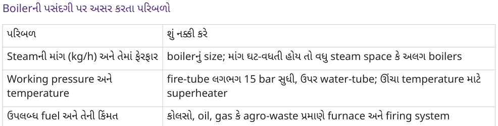
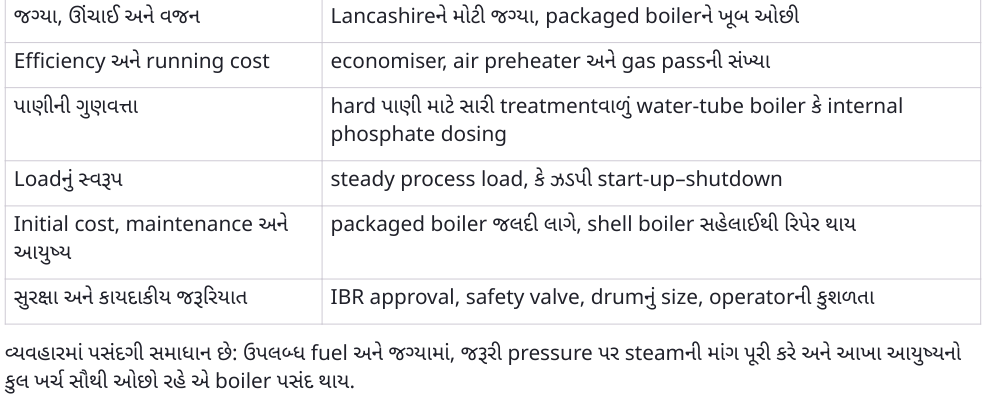
Q.4 (c) · Explain Reciprocating Air compressors in detail. · 7 marks
What it is
A reciprocating air compressor is a positive-displacement machine. A piston moving in a cylinder draws in a fixed volume of air and then squeezes it into a smaller volume, raising its pressure. Single-stage machines give up to about 6 bar; two-stage machines with an intercooler give 6–15 bar or more.
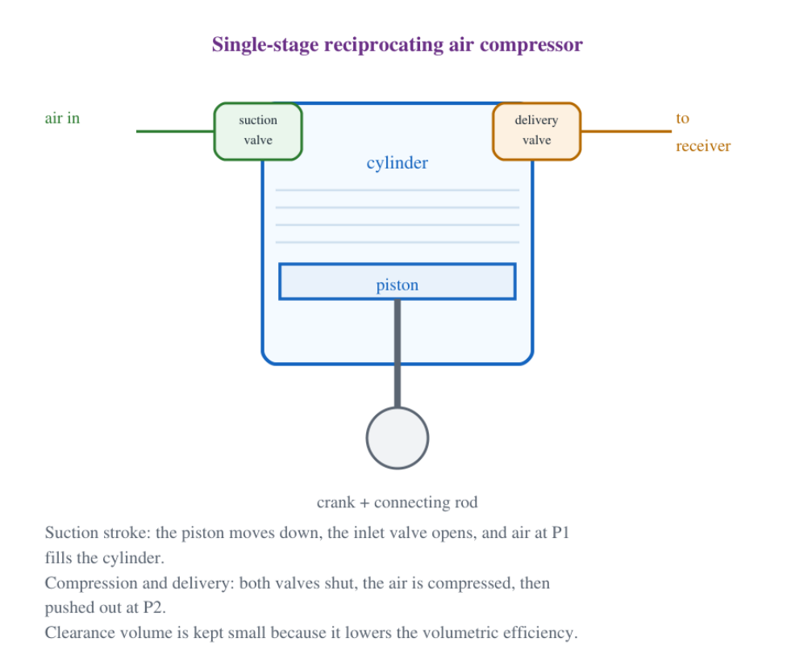
Fig. 4.1 · Single-stage reciprocating compressor: cylinder, piston, suction and delivery valves.
Construction — part and purpose
Part Purpose
Cylinder and piston with rings
the compression space; the rings stop air leaking past the piston
Suction valve opens only when the cylinder pressure falls below the inlet pressure
Delivery valve opens only when the cylinder pressure rises above the receiver pressure
Connecting rod and crankshaft
turn the rotation of the motor into piston movement
Flywheel stores energy so the crank turns smoothly through the compression stroke
Intercooler (multi-stage) cools the air between stages so the next stage does less work
Aftercooler, receiver, dryer, filter
cool, store and clean the air before use
Clearance space the small space left at the end of the stroke; kept minimum because it reduces volumetric efficiency
Working — step and reason
1. Suction stroke — The piston moves down; the pressure falls below the inlet pressure, the suction valve opens and air at P1 fills the cylinder.
2. Compression — The piston moves up with both valves closed, so the trapped air is compressed and its pressure rises towards P2.
3. Delivery — When the pressure reaches P2 the delivery valve opens and the air is pushed into the receiver.
4. Clearance effect — Air left in the clearance space must re-expand before the suction valve can open, so the volumetric efficiency is always below 100 %.
5. Multi-stage — Two or three stages with intercooling keep the air temperature low, reduce the work per stage and raise the overall efficiency.
Work and efficiencies
Advantages and limitations
• Very high pressure is possible, efficiency is good, and the machine is robust and simple to maintain.
• Delivery is pulsating and needs a receiver; the machine is bulky and heavy, has many moving parts, needs a strong foundation, and the air picks up oil — so an oil-free instrument-air system needs a filter or a non-lubricated compressor.
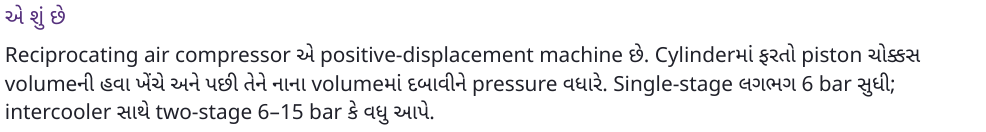
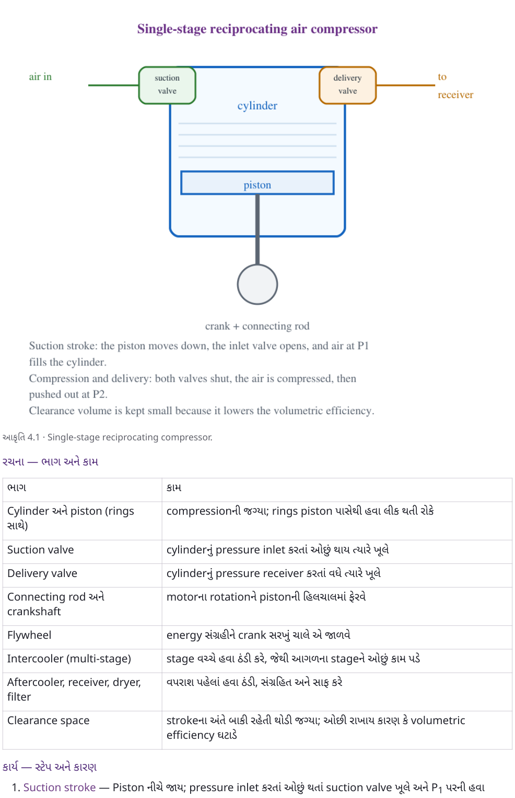
Q.4 (a) · List application of Nitrogen as Inert gas. · OR · 3 marks
Nitrogen as an inert gas — applications
• Tank blanketing: a nitrogen pad over a flammable solvent keeps air out, so no explosive mixture can form.
• Purging before start-up and before maintenance: lines and vessels are displaced with nitrogen so no flammable vapour or oxygen remains.
• Inert atmosphere in reactors: for oxidation-sensitive products, polymerisation and grinding of powders.
• Pressure transfer: nitrogen pushes a liquid from one vessel to another where a pump could damage the product or leak.
• Packaging: food and pharmaceutical packs are flushed with nitrogen to extend shelf life.
• Storage-tank blanketing for oils, and protection of catalyst during loading.
• Safety: nitrogen keeps the oxygen level below the limiting oxygen concentration.
It is used because it is chemically almost unreactive, cheap, and available on site from an air- separation unit or a nitrogen generator.
Q.4 (b) · Differentiate Reciprocating and Centrifugal type of Air compressor. · OR · 4 marks
Difference
![Q.4 (b) OR: preserved source formula, table or diagram, page 41. Extracted text context (formula notation may be incomplete): Point Reciprocating compressor Centrifugal compressor Principle positive displacement — the piston squeezes a trapped volume dynamic — a rotating impeller gives velocity, the diffuser converts it into pressure Pressure very high, 6–15 bar or more in multi-stage low to medium, about 2–8 bar per stage Capacity small to medium very large Flow pulsating, needs a receiver continuous and steady Efficiency high at high pressure high only near the design point, falls at part load Size and weight bulky and heavy, needs a strong foundation compact and light for the same flow Air quality oil is carried with the air oil-free delivery is possible Maintenance many moving parts, valves and rings to replace few moving parts, smooth running, less maintenance Cost cheaper for small capacity and high pressure cheaper for large flow Typical use instrument air, high-pressure process, workshops plant air, ventilation, blowers, large process air](winter-2025.assets/0069.webp)
In short: for high pressure with a small flow choose reciprocating; for large flow at moderate pressure choose centrifugal.
Q.4 (c) · Explain Rotary compressors in detail. · OR · 7 marks
What they are
Rotary compressors are positive-displacement machines in which the compressing element rotates continuously instead of reciprocating. Because there is no reciprocating mass they run smooth and give a steady, pulsation-free flow at moderate pressure, about 1–10 bar.
Main types
![Q.4 (c) OR: preserved source formula, table or diagram, page 42. Extracted text context (formula notation may be incomplete): Type How the air is trapped and squeezed Screw compressor (twin-screw) two meshing rotors trap air between the lobes; as they turn the space shrinks and the air is pushed to the delivery end Sliding-vane compressor a rotor with radial vanes runs eccentrically in the casing; the space between two vanes shrinks as the rotor turns Roots blower two lobes rotate without touching; air is displaced from inlet to outlet at almost constant volume, for large volume at low pressure Liquid-ring compressor a rotating ring of water seals the spaces and acts as the compressing element; handles dirty or explosive gases](winter-2025.assets/0072.webp)
Construction — screw compressor as the example
Part Purpose
Male and female rotors in a casing
trap and squeeze the air; the rotors are the only main moving parts
Inlet and outlet ports placed at the ends, so air enters at the large-volume end and leaves at the small-volume end
Synchronising gears keep the two rotors in mesh without touching
Working — step and reason
1. Step 1 — The rotors turn; their lobes open at the inlet, so air is drawn into the space between them.
2. Step 2 — As the rotors mesh, the trapped space is closed off from the inlet.
3. Step 3 — Further rotation makes the space smaller, so the air is compressed.
4. Step 4 — When the outlet port is uncovered, the compressed air leaves into the receiver. The cycle is continuous, so the delivery is steady.
5. Step 5 — In an oil-flooded machine the oil is separated, cooled and returned; the air is cooled and dried before use.
Advantages and limitations
• Compact and light for the air delivered, steady delivery, few moving parts, low vibration, small foundation, and fully automatic control is possible.
• Pressure per stage is limited; the rotors need precision machining and sealing; the oil-flooded type needs an oil separator, or must be oil-free for instrument air; and efficiency falls at part load unless a variable-speed drive is used.
Question 5
Q5 · Refrigeration performance, multistage compression and refrigerants
Q.5 (a) · Explain COP and TOR in refrigeration. · 3 marks
COP — coefficient of performance
COP is the cooling effect obtained for each unit of work supplied to the compressor. It is the measure of how good a refrigerator is:
Example (illustrative): a refrigerator removes 3 kW from the cold space with a 1 kW compressor, so COP = 3 / 1 = 3. A domestic refrigerator runs at COP about 2–4, a well-designed plant 5–6. COP has no unit, and a higher COP means less electricity for the same cooling.
TOR — tonne of refrigeration
TOR (or TON) is a unit of cooling capacity, not of efficiency. One tonne of refrigeration is the heat absorbed in melting one tonne (1,000 kg) of ice at 0 °C in 24 hours:
So a 5-tonne plant means 5 × 3.5 = 17.5 kW of cooling. The same plant can have any COP — COP describes efficiency, TOR describes size.
Q.5 (b) · Explain Energy efficient Multistage compressors. · 4 marks
Why one stage is not enough
If the whole pressure rise is done in one stage, the air becomes very hot, the delivery temperature limits the pressure ratio to about 5–6, and much of the work is wasted as heat. A multistage compressor divides the compression into two or three stages with an intercooler between them.
Why intercooling saves energy
The air is cooled back to almost the inlet temperature between the stages. The volume to be compressed in the next stage is therefore smaller, so the work of that stage falls. With perfect intercooling the saving is large — two stages need less work than one stage for the same total pressure ratio.
Optimum intermediate pressure, two stages: P2 = √(P1 × P3)
Saving in work = area between the single-stage and the two-stage indicator diagram
Other energy-saving features
• Intercooler and aftercooler with a large, clean heat-transfer surface.
• Good valves and minimum clearance volume, so the volumetric efficiency stays high.
• Variable-speed drive or load–unload control, so the machine does not run fully loaded at part demand.
• Dry air filters and a leak-free distribution line: lowering the line pressure by 1 bar saves roughly 6–8 % of the compressor power.
Overall: multistage compression with intercooling lowers the delivery temperature, lowers the power per kg of air, improves the volumetric efficiency and gives cooler, drier air.
Q.5 (c) · Explain Primary Refrigerants Halo Carbons & Hydrocarbons. · 7 marks
Primary and secondary refrigerant
A primary refrigerant is the fluid that actually changes phase in the cycle — it absorbs heat in the evaporator and rejects it in the condenser. A secondary refrigerant such as water or brine merely carries heat from the load to the primary refrigerant.
1 · Halocarbons
These are derivatives of methane and ethane in which hydrogen atoms are replaced by chlorine and fluorine. The familiar Freons belong to this family. Their great advantage is that they are non-toxic and non-flammable.
Properties and behaviour of halocarbons
• Non-toxic, non-flammable, colourless and odourless, so they are safe to handle — that is why they replaced ammonia and SO2 in domestic machines.
• Miscible with lubricating oil and stable in the machine; the latent heat per unit volume is lower than ammonia, so a larger compressor is needed for the same duty.
• Very low boiling point, so a small pressure difference gives deep cooling.
• CFC and HCFC halocarbons destroy stratospheric ozone and have a high global-warming potential; the Montreal Protocol and the Kigali Amendment schedule their phase-out. HFCs such as R-134a are ozone-safe but still warm the climate, so HFOs and natural refrigerants are replacing them.
2 · Hydrocarbons
Hydrocarbons are simple organic compounds — methane, ethane, propane, butane, isobutane and their mixtures. They are excellent refrigerants thermodynamically, but they are flammable.

Properties of hydrocarbons as refrigerants
• High latent heat and a good heat-transfer coefficient, so the charge is small and efficiency high.
• Zero ozone-depletion potential and a very low global-warming potential — the reason they are returning as natural refrigerants.
• Cheap and easily available (the LPG family) and compatible with ordinary mineral oil.
• They are flammable and form an explosive mixture with air, so the charge is kept small, the circuit is sealed, electrical parts are spark-free and the room is ventilated. They have no smell, so a leak is not noticed by smell alone.
Comparing the two families
Point Halocarbons Hydrocarbons
Safety non-flammable, low toxicity flammable, explosive in air
Ozone depletion high for CFC/HCFC, zero for HFC zero
Global-warming potential high for CFC and HFC very low
Efficiency moderate high with a small charge
Cost and availability costly and controlled cheap and easily available
Present status being phased down preferred as natural refrigerant
Selection: R-134a and R-410A remain common where the charge is large and fire risk must be avoided; R-600a and R-290 are standard in sealed domestic appliances because the charge is only a few tens of grams.
Q.5 (a) · Explain secondary Refrigerant's water & brine. · OR · 3 marks
What a secondary refrigerant is
A secondary refrigerant does not change phase in the cycle. It is cooled by the primary refrigerant in a central plant and then pumped around to pick up heat from the load. Water and brine are the two common ones.
Water
• Cheap, easily available, high specific heat (4.18 kJ/kg·K), non-flammable, non-toxic and not corrosive to clean steel.
• It cannot go below 0 °C, so it is used for air-conditioning and chilled-water coils at 5–12 °C.
• It needs a closed circuit with a small pump head, and treatment against algae and scale.
Brine
A brine is a solution of calcium chloride or sodium chloride in water. The salt lowers the freezing point, so brine works below 0 °C: CaCl2 brine down to about −40 °C and NaCl brine to about −18 °C.
• Used in ice plants, cold stores, dairy chilling and fisheries, where the coil is at −5 to −25 °C.
• Specific heat is lower and viscosity higher than water, so more pumping power is needed.
• It is corrosive to steel and cast iron, so inhibitors are added and leakage into food must be prevented. Strong brine absorbs moisture and becomes dilute, so its strength is checked with a hydrometer.
Comparison
Point Water Brine (CaCl2)
Temperature range above 0 °C, typically 5–12 °C down to about −40 °C
The advantage of both is that a costly or hazardous primary refrigerant such as ammonia stays in the plant room, and only a harmless secondary fluid travels to the rooms.
Q.5 (b) · List advantages of multistage compressor. · OR · 4 marks
Advantages of multistage compression
• Lower work input: intercooling shrinks the volume handled by the next stage, so the total power falls for the same pressure ratio.
• Lower delivery temperature: heat is removed between the stages, so the air leaves cooler and the oil, valves and rings last longer.
• Better volumetric efficiency: a smaller pressure ratio per stage means less clearance loss and more air actually delivered.
• Higher pressure is reachable: one stage is limited to a pressure ratio of about 5–6; three stages reach 100 bar and more.
• Better mechanical balance: the load is spread over several cylinders, so the flywheel and foundation can be lighter.
• Smaller cylinders and less leakage: each stage handles a smaller volume at a moderate temperature, which reduces wear and leakage past the piston.
• Water and oil separation: condensed moisture is drained at the intercooler and aftercooler, so the air is drier and cleaner.
• Cheaper running and longer life: lower temperature and lower load per stage reduce power and maintenance cost.
Comparison of ideal work: compressing air from 1 bar to 9 bar in one stage needs much more work than two stages (1 → 3 → 9 bar) with perfect intercooling, because the area of the p–V diagram between the two paths is saved.
Q.5 (c) · Explain vapor compression refrigeration. · OR · 7 marks
Principle
In vapour-compression refrigeration a volatile liquid — the refrigerant — is evaporated at low pressure and condensed at high pressure. Evaporation takes latent heat from the cold space, which is the cooling effect; condensation rejects that heat plus the compressor work to the surroundings.
A compressor is necessary because the vapour must be raised in pressure before it can be condensed at ambient temperature.

Fig. 5.1 · The four components and the four processes of the cycle.
Construction — part and purpose
![Q.5 (c) OR: preserved source formula, table or diagram, page 52. Extracted text context (formula notation may be incomplete): Part Purpose Compressor raises the vapour from evaporator pressure to condenser pressure; this is the work input Condenser rejects heat to cooling water or air and liquefies the vapour Expansion valve or capillary drops the pressure to the evaporator level and meters the flow, so the temperature falls Evaporator absorbs heat from the space and evaporates the liquid refrigerant Receiver, drier and filter store the liquid and remove moisture and dirt before the expansion valve Thermostat, HP/LP cut-out, sight glass start and stop the compressor and protect the machine](winter-2025.assets/0090.webp)
Working — four processes, step and reason
1. 1 → 2 Compression — Dry saturated vapour enters the compressor at low pressure and leaves at condenser pressure as superheated vapour. Work W is added, so its temperature rises above the ambient temperature.
2. 2 → 3 Condensation — In the condenser the vapour first gives up superheat and then condenses at constant pressure; heat QH goes to the cooling medium.
3. 3 → 4 Expansion — Liquid at high pressure passes through the expansion valve; the pressure falls suddenly, part of the liquid flashes and the mixture cools to the evaporator temperature. No work is done in this step.
4. 4 → 1 Evaporation — The cold mixture enters the evaporator, absorbs heat QL from the space and evaporates completely; the vapour returns to the compressor and the cycle repeats.
Performance
Refrigerating effect per kg = h1 − h4
Heat rejected at the condenser, QH = QL + W = h2 − h3
Advantages, limitations and use
• High COP, compact equipment, a wide choice of refrigerants, and it reaches −40 °C with a suitable refrigerant.
• It needs a compressor and electricity; the refrigerant can leak and is controlled by ozone and global-warming rules; moving parts need maintenance.
• Used in domestic refrigerators, water coolers, window and split AC, cold stores, dairy chilling and process cooling.